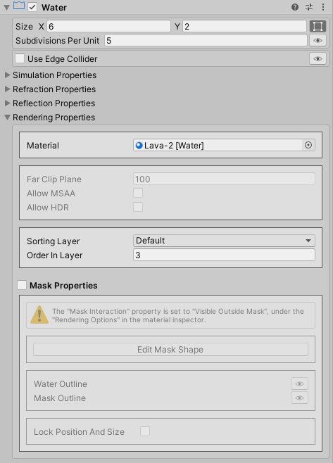

Getting Started With The Water System¶
Creating A Water Object¶
We create a water object from the Hierarchy's Create menu:
2D Object → Game2D Water Kit → Water Object
Resizing The Water Object¶
We resize the water object right in the scene view using the Rect Tool, or we can just provide the width and the height in the water component inspector.
Script Reference
1 2 3 4 5 6 7 8 9 10 | |
Sorting The Water Object Relative To Sprites¶
Before trying to sort the water object relative to sprites, we first need to make sure that the Rendering Queue property, under Rendering Options in the water material inspector, is set to Transparent.
Note
The Rendering Queue property is set to Transparent by default.

Then, under the Rendering Properties in the water component inspector, we specify the sorting layer as well as the order within that layer.

Script Reference
1 2 | |
Changing The Shape Of The Water Object¶
We can hide or reveal parts of the water object to make it take a certain shape either by using Sprite Masks or by enabling the Mesh Mask feature under the Rendering Properties in the water component inspector.
Script Reference
1 | |
To edit the mask's shape, we first need to enter the Mask Shape Editor by pressing the Edit Mask Shape button.
Then, we can tweak the mask's shape using the control points in the scene view.
- Hold the Ctrl key and press any of the green dots to add a control point at that position.
- Hold the Alt key and press the control point you want to remove.
Under the Rendering Options in the water material inspector, we can set the Mask Interaction property to:
- Visible Inside Mask
- Visible Outside Mask
If the Lock Position And Size property is toggled on, the mask will no longer update its size and position to match the water object's size and position.
Setting Up The Edge Collider 2D¶
If the Use Edge Collider 2D property is toggled on, we can easily edit the edge collider's polyline so it matches the mask's outline.
Setting Up The Polygon Collider 2D¶
We can also set up a Polygon Collider 2D to be used instead of the Box Collider 2D to detect collisions. It will also be used by the Buoyancy Effector 2D.
Info
We will look into the other rendering properties later in the Water Visuals section.